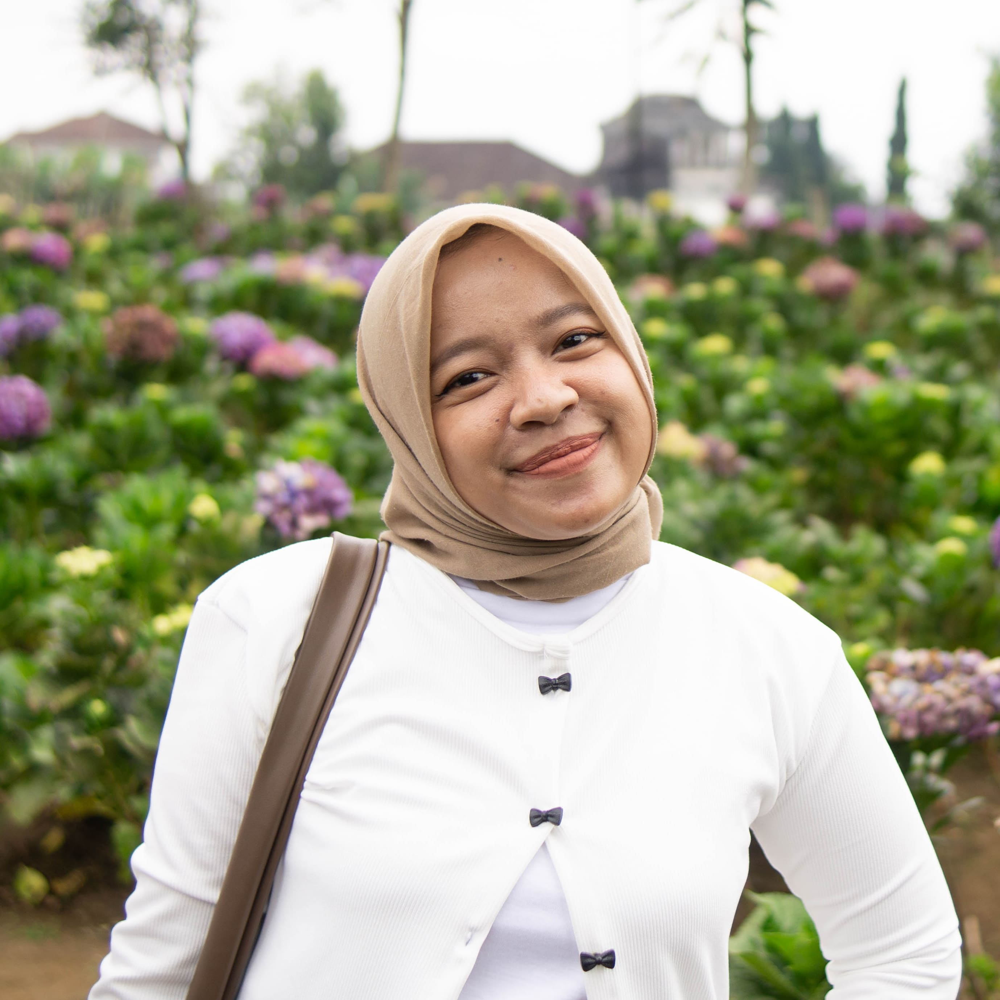

Kami semua bangga padamu!

Faizatul Mukaromah, S.Kom
Lulusan Terbaik Penuh Pesona
Galeri Kenangan Kita 📸
.jpg)
.jpg)
.jpg)
.jpg)
.jpg)
.jpg)
.jpg)
.jpg)
Ucapan Spesial Untukmu 💌

"Congrats, Welcome to Reality Club!"
- Regi anak riau

"selamat faizaa, semoga terkabulkan segala doa baik yang diharapkan"
- Zildan sadboy

"Apel apel apa yang paling manis...???
APELagi kalau bukan dek faiz
Eleh eleh kemayune"
- Zakaria Imoet dar der dor

"Selamat wisuda, Faiza! Terbanglah tinggi dan raih semua bintang, masa depan cerah menantimu."
- Irsyad arek nyeni

"Barakallah fii ilmi, Faiza. Semoga ilmu yang kamu dapatkan menjadi berkah dan bermanfaat bagi banyak orang."
- Monica M-nya Menawan

"Selamat atas kelulusanmu, Faiza! Jangan pernah berhenti bermimpi dan teruslah mengejar cita-citamu setinggi mungkin."
- Shofa (pusing pajak pati naik 250%)

"AAAA HAPPY GRADUATION BEBEBB🥳🎓. semoga segera menemukan kerjaan yang cocok dan pasangan yang cocok juga. Aamiin🤲🏼✨"
- Diva istrinya jeamin (GWS)

"Izaa, semangat menjalani quarter life! Semoga semakin kuat dan bijak jadi dewasa, sukses selalu ke depannya. Ditunggu kabar baiknya yaaa"
- Arafat always NT

"Terima kasih untuk semua tawa, dukungan, dan bahkan drama tugas-tugas kuliah yang telah kita lalui bersama. kenangan indah kita akan selalu ku ingat. Semoga faizul bahagia dimanapun tempat berada, sukses selalu dan menemukan seseorang yg tepat"
- Hilda Kusen

"Selamat wisuda, Faiza! Akhirnya sampai juga di garis finish yang satu ini🏁 Tapi tahu sendiri kan, ini bukan akhir, cuma pit stop buat lanjut ke perjalanan hidup yang lebih seru. Bangga banget liat dirimu dah nyampe sini, tetap rendah hati dan terus ngegas ya!🚵♀"
- Alfan A-nya anjay
"Congrats Faiza atas wisudanya! Terima kasih sudah jadi teman terbaik selama masa perkuliahan sampai sekarang. Banyak suka duka yang kita lewati bareng, dan aku bersyukur bisa punya teman sepertimu. Semoga perjalanan ke depannya penuh kebahagiaan, rezeki lancar, dan semua mimpi bisa diraih"
- Sultan sang penakluk

"Happy graduation, Faiza! 🌸 I’m truly proud of you and your journey. Keep trusting the process and always put your trust in Allah. Remember, nothing comes easy, but with patience and prayer, everything will fall into place. May you always bring happiness to your parents, especially your mom ❤"
- Alda ngawi